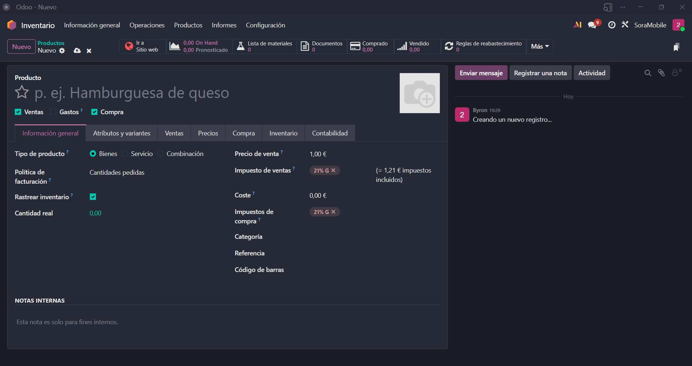
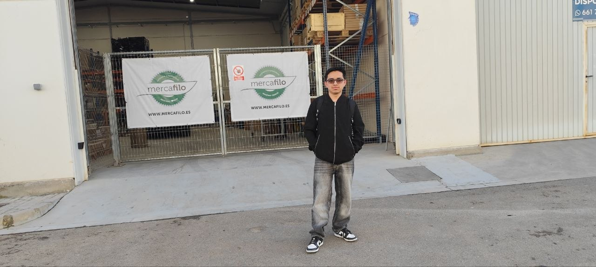

Integración de Reconocimiento de Voz para la Automatización
de Registros en un Sistema ERP.
Byron Andres Perez Chavez · Grado en Ingeniería de Organización Industrial
Los ERPs modernos son potentes, pero presentan barreras críticas para el usuario de campo: demasiados clics, sin acceso móvil real, y resistencia al cambio.

Benchmark Manual · n=160 · Tabla 7 TFG
Atención visual + motora ininterrumpida por registro
El bot de Telegram captura notas de voz en lenguaje natural, las transcribe con Gemini 2.5 Flash y escribe directamente en Odoo ERP.
Se realizó una presentación del prototipo funcional ante Tomás, director general de Mercafilo empresa comercial con equipo de campo en Valencia durante el Sprint 9.
Hallazgo clave: La adopción de IA no la frena la usabilidad de la solución, sino la rigidez de las políticas IT heredadas.

El bot consulta en tiempo real qué campos existen en el modelo Odoo destino y los inyecta en el prompt de Gemini. Funciona para cualquier módulo sin tocar el código.
Tres funciones del repositorio donde reside la innovación técnica. Desliza o usa las flechas.
La innovación central: el bot consulta a Odoo qué campos existen en ese modelo y los inyecta en el prompt. Funciona para cualquier módulo sin programación adicional.
Un comercial dicta el resultado de su visita mientras conduce. La IA extrae cliente, importe, prioridad y notas, crea la oportunidad en Odoo y devuelve el enlace directo al registro.
La inyección dinámica de esquema hace que el bot funcione con cualquier modelo Odoo sin tocar el código. Demostración en dos módulos simultáneos.
Módulo Ventas
Pedido confirmado por voz · action_confirm()
Módulo Inventario
Stock consultado en tiempo real · stock.quant
Corpus de 160 grabaciones, 16 estudiantes IOI como testers, 5 tipos de tarea distintos. Los 4 escenarios fueron diseñados deliberadamente para exponer las vulnerabilidades del sistema en condiciones extremas.
Interfaz web Odoo estándar. Línea base científica del estudio.
AMD Ryzen 7 · 8GB RAM. Latencia pura del algoritmo sin red.
CPU solo durante procesamiento. Cold Start activo. Peor caso de producción.
2 vCPU · instancias mínimas=1. Configuración de producción real recomendada.
Serverless básico: ×2.8 más lento que el humano. Cloud Always On: −41% más rápido. La infraestructura es tan crítica como el algoritmo (Tabla 8, TFG).
Más lento que manual
(Throttled, CRM)
Más rápido que manual
(Always On, CRM)
Más rápido que manual
(Always On, Contactos)
Precisión WAR
160 grabaciones
El sistema elimina la carga cognitiva del trabajador de campo: de 37 segundos de atención ininterrumpida a una nota de voz de 8 palabras mientras conduce al siguiente cliente.
ODS 8 — Trabajo Decente y Crecimiento Económico: Aumenta la productividad del comercial sin añadir carga. Elimina el trabajo repetitivo para que pueda centrarse en lo que importa: vender.
CRM manual
Con bot
Alta contacto manual
Con bot
WAR — Precisión de transcripción
La integración de voz con IA elimina la fricción entre el trabajador en ruta y el ERP. No es el futuro — ya funciona, está medido y está documentado.
Repositorio GitHub
github.com / byronperezch · ODOO-VOZ
Autor
Byron Andres Perez Chavez · IOI · UEV 2026
Extensión a RRHH, Contabilidad, Proyectos y Compras con cero cambios en el núcleo del bot.
Gemini ya soporta +40 idiomas. El prompt adapta el locale automáticamente al idioma del usuario.
Evaluar migración a PWA o integración directa con el asistente de voz nativo del SO móvil.
Modelo entrenado con transcripciones Odoo reales para reducir alucinaciones en datos numéricos.